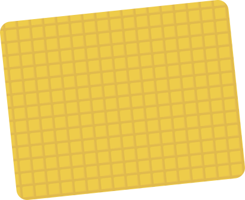
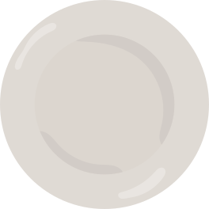
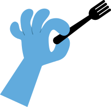
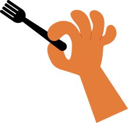

JUGADOR 1
0 pts
JUGADOR 2
0 pts


Reacción
rápida
Dos jugadores. Un plato.
¡30 segundos para elegir bien!
00:30
La fruta entera conserva fibra, que ayuda a sentirse satisfecho por más tiempo; el jugo suele tener mucha menos.